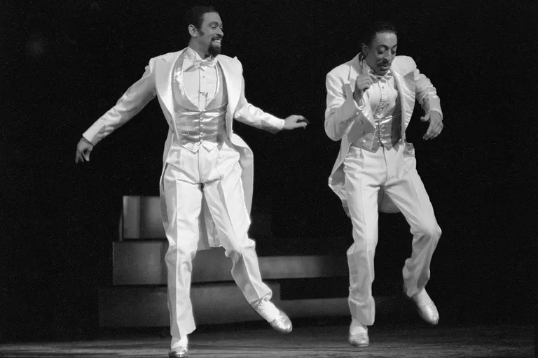

BALLET
Ballet originated in the 15th century, first in Italy and then in France. Over the centuries, ballet has influenced many other styles of dance and become a fine art form in its own right. There are three basic styles: Classical: This form reached its peak in 19th-century France and Russia. It is often story-driven and orchestrated ("The Nutcracker" is a great example), with fantastical sets and costumes. The movement emphasizes pointe work (dancing on toes), graceful expressions, and symmetry among dancers. Neoclassical: This is an evolution of classical ballet, which emerged in the early to mid-20th century. Movements are faster and more urgent, with less emphasis on symmetry, and simple sets and costumes. The plot is often nonexistent. Orchestras, bands, or soloists may accompany the dancers. Contemporary: Like neoclassical, the plot is cast aside in favor of pure movement and physical expression, which may not appear to be dancelike at all. Costumes and set designs are frequently simple or abstract. Music or sound work, if used, is often contemporary or experimental in nature.
JAZZ DANCING
Jazz is a lively dance style that relies heavily on originality and improvisation. This style often uses bold, dramatic body movements, including body isolations and contractions. Jazz dance has its roots in African traditions kept alive by slaves brought to the U.S. Over time, this evolved into a style of street dance that soon moved into the jazz clubs of the early 20th century. During the big-band era of the 1930s and early '40s, swing dancing and the Lindy Hop became popular expressions of jazz dancing. In the mid- to late 20th century, choreographers like Katherine Dunham incorporated these improvisational, physical expressions into their own works.
TAP DANCE

Like jazz dancing, tap evolved from the African dance traditions preserved by slaves in the U.S. In this exciting dance form, dancers wear special shoes equipped with metal taps. Tap dancers use their feet like drums to create rhythmic patterns and timely beats. Music is rarely used. After the Civil War, tap evolved into a popular form of entertainment on the Vaudeville circuit, and later a staple of early Hollywood musicals. Some of the most notable masters of tap include Bill "Bojangles" Robinson, Gregory Hines, and Savion Glover.
HIP-HOP DANCE
Another descendant of jazz dance, hip-hop emerged from the streets of New York in the 1970s in the city's African-American and Puerto Rican communities at the same time as rap and DJing. Breakdancing—with its popping, locking, and athletic floor movements—is perhaps the earliest form of hip-hop dance. Often, "crews" of teams of dancers would hold competitions to see which group had bragging rights as the best. As rap music flourished and diversified, different styles of hip-hop dancing emerged. Krumping and clowning took the physical exuberance of breakdancing and added narrative and comic expression in the '90s. In the 2000s, jerkin' and juking became popular; both of these take the pop-lock movement of classic breakdancing and add wild fashions.
MODERN DANCE
Modern dance is a dance style that rejects many of the strict rules of classical ballet, focusing instead on the expression of inner feelings. It emerged in Europe and the U.S. in the early 20th century as a rebellion against classical ballet, emphasizing creativity in choreography and performance. Choreographers including Isadora Duncan, Martha Graham, and Merce Cunningham developed intricate methodologies for their dances, often emphasizing wild or extreme physical expressions performed to avant-garde or experimental musical accompaniment. These choreographers also collaborated with artists working in other fields such as lighting, projection, sound, or sculpture.
SWING DANCE
Swing dance is yet another offshoot of traditional jazz dance that became popular as swing bands became the dominant form of popular entertainment in the late 1930s and early '40s. Unlike other forms of jazz dance that emphasize the individual, swing dance is all about partnership. Athletic couples swing, spin, and jump together in syncopated time to the beat of the band, usually with a fixed number of choreographed steps repeated in a specific sequence.
CONTRA DANCE

Contra dance is a form of American folk dance in which the dancers form two parallel lines and perform a sequence of dance movements with different partners down the length of the line. It has its roots in similar folk dances from colonial-era Great Britain. Although contra dancing is partner-based, it's a communal arrangement; you don't need to bring your own partner, because you'll be dancing with everyone down the line at some point. Dancers are led by a caller, who calls out specific steps and directions to change partners. Folk music from the British Isles or the U.S. is the most common form of accompaniment.
COUNTRY AND WESTERN
Country and western dance is a broad category of many dance styles, incorporating influences from contra, folk, and even jazz, set to country or western-themed dance music. Waltzes and two-steps are the most common forms of partner-style dancing, but you'll also find variations on polkas and other folk dances brought to the U.S. by German and Czech immigrants. Square dances and line dances, where people dance in tight, choreographed movements with a number of partners or as part of a group, have their roots in contra dancing. Clog dancing, a form of footwork-heavy dance rooted in the jigs of Britain and Ireland, is most frequently associated with bluegrass music.
BELLY DANCING

Belly dancing emerged from the folk traditions of the Middle East, but its precise origins are unclear. Unlike most forms of Western dancing, which emphasize complex footwork and partner choreography, belly dancing is a solo performance that focuses on the torso and hips. Dancers combine a series of fluid movements to emphasize rhythm, isolated flourishes like hip twists for percussive punctuation, and shimmies, spins, and torso vibrations to add variety and detail.
FLAMENCO
Flamenco dance is an expressive dance form that mixes percussive footwork with intricate hand, arm, and body movements. It emerged from the cultures of the Iberian Peninsula in the 1700s and 1800s, though its precise origins are unclear. Flamenco consists of three elements: cante (the song), baile (the dance), and guitarra (guitar playing). Each has its own traditions, but the dancing is most often closely associated with flamenco, with its flamboyant gestures and rhythmic foot stamping that calls to mind tap dancing.
LATIN DANCE
Latin dance is a broad term for any number of ballroom and street-style dance forms that evolved in the 19th and 20th centuries in the Spanish-speaking Western Hemisphere. These styles have roots in European, African, and indigenous dance and ritual. Many styles of Latin dance have their origins in a specific region or country. Tango, with its sensual, close partnerships, originated in Argentina. Salsa, with its hip-swaying beat, evolved in the Puerto Rican, Dominican, and Cuban communities of 1970s New York City. Other popular forms of Latin dance include Mambo, which originated in 1930s Cuba; bomba, a folk-style of rhythmic dance from Puerto Rico; and meringue, a Dominican style of close partner dancing with tight hip movements.
FOLK DANCE
Folk dance is a generic term that can refer to a variety of dances developed by groups or communities, as opposed to being made up by a choreographer. These forms often evolve over generations and are learned informally, usually at communal gatherings where the dances are performed. Music and costuming often reflect the same ethnic traditions of the dancers. Examples of folk dances include the rigid uniformity of Irish line dancing and the call-and-response interplay of a square dance.